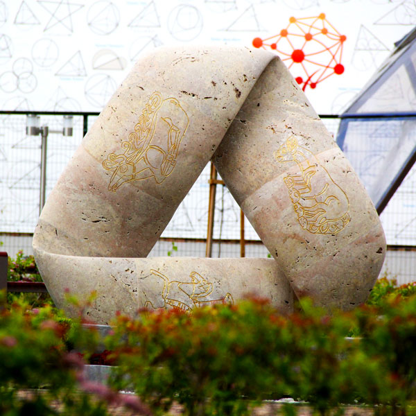

02 / Топология
Лист Мёбиуса
Заполненный пример
Математическая идея
Лист Мёбиуса получают из полоски, если перед склеиванием её концов сделать половину оборота. У этой поверхности одна сторона, а её граница образует одну непрерывную замкнутую линию.
На модели парка можно увидеть сочетание математической формы и образов культурного наследия Адыгеи. Такой экспонат помогает обсуждать свойства поверхности через наблюдение, а не только через определение.
Бумажная модель
Можно ли перейти на «другую сторону»?
- Возьмите бумажную полоску и поверните один конец на 180°.
- Склейте концы и проведите линию вдоль середины поверхности.
- Продолжайте движение, пока не вернётесь в исходную точку.
- Проследите пальцем весь край полоски.
Что наблюдать
Линия проходит по всей поверхности, хотя вы не пересекали край. А при обходе границы получается один замкнутый маршрут.
Фотографии экспоната
Нажмите фотографию, чтобы рассмотреть её.


Фотографии из коллекции исходного сайта.
Страница оригинала
«Лист Мёбиуса» на museum.adygmath.ru ↗
Это учебная страница собственной копии сайта.